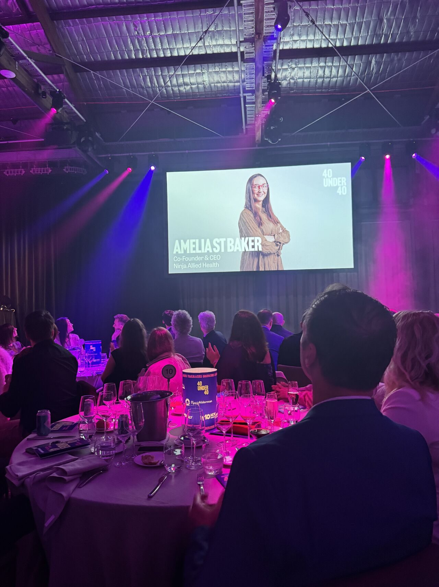

She found her own cancer before anyone else thought to look.

As a teenager Amelia was unwell for years and told, repeatedly, that nothing was wrong. One diagnosis was narcolepsy. It took studying anatomy for her occupational therapy degree to notice what her doctors had not, and then convincing her own doctor to order the test. At twenty she was diagnosed with thyroid cancer.
She still manages the effects. More than anything, the experience taught her to trust what she could see when nobody else would name it. That habit runs through everything she has built since.
The people who build things that last are the ones who notice what everyone else walks past.
She qualified as an occupational therapist and, within a few years, Co-Founded Ninja Allied Health. Starting with nothing, she grew it to more than 40 staff in under two years, delivering over ten thousand hours of therapy in its first year while committing more than a thousand hours of free care annually to people who could not access funding. Along the way she pioneered 3D printed, low tech assistive technology designed around how clients actually grip, reach and move, and extended reality care for regional and remote clients.
In 2026 she acquired a second allied health business, the Redlands Children's Therapy Centre, and integrated it with Ninja Allied Health. She completed her MBA at the University of Queensland as the youngest person ever admitted, received the Envisage Technology Data Analytics and Technology Excellence Prize, spent two years on the Queensland Government Innovation Advisory Council, and in 2025 published a social storybook for children on confidence and emotional regulation.